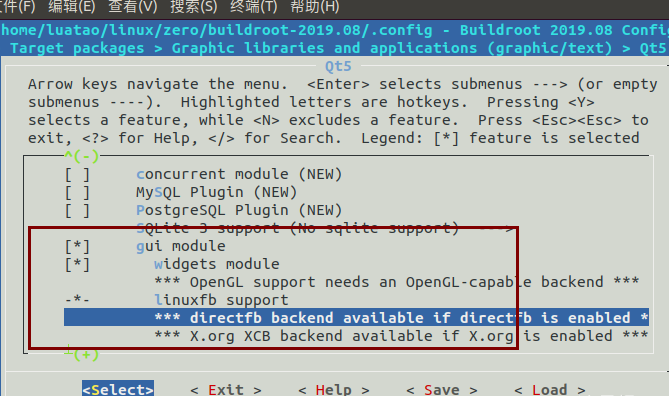

使用buildroot编译QT
2023-02-01
一.配置编译
在buildroot下面，打开配置界面
make menuconfig



然后编译
make
将文件系统解压到第二分区
tar -xvf output/images/rootfs.tar -C /media/xsx/rootfs/
二.查看QT版本
output/build/qt5base-5.12.4/bin/qmake -v

可以看到我们的qt是5.15的
三.运行一个demo
例程都在
output/build/qt5base-5.12.4/examples/widgets/widgets/
使用qmake 编译数字时钟的例程
cd output/build/qt5base-5.15.2/examples/widgets/widgets/digitalclock/
../../../../bin/qmake digitalclock.pro
xsx@ubuntu:~/v3s/buildroot-2021.02.4/output/build/qt5base-5.15.2/examples/widgets/widgets/
查看生成了Makefile
digitalclock$ ls
digitalclock.cpp digitalclock.h digitalclock.pro main.cpp Makefile
执行make
xsx@ubuntu:~/v3s/buildroot-2021.02.4/output/build/qt5base-5.15.2/examples/widgets/widgets/digitalclock$ make
/home/xsx/v3s/buildroot-2021.02.4/output/host/bin/arm-linux-gnueabihf-g++ --sysroot=/home/xsx/v3s/buildroot-2021.02.4/output/host/arm-buildroot-linux-gnueabihf/sysroot -Wl,-O1 -Wl,--enable-new-dtags -o digitalclock .obj/digitalclock.o .obj/main.o .obj/moc_digitalclock.o -latomic /home/xsx/v3s/buildroot-2021.02.4/output/build/qt5base-5.15.2/lib/libQt5Widgets.so /home/xsx/v3s/buildroot-2021.02.4/output/build/qt5base-5.15.2/lib/libQt5Gui.so /home/xsx/v3s/buildroot-2021.02.4/output/build/qt5base-5.15.2/lib/libQt5Core.so -lpthread -lrt -lpthread -ldl
查看，已经生成可执行文件digitalclock
xsx@ubuntu:~/v3s/buildroot-2021.02.4/output/build/qt5base-5.15.2/examples/widgets/widgets/digitalclock$ ls
digitalclock digitalclock.h main.cpp
digitalclock.cpp digitalclock.pro Makefile
在sd卡第二分区建立调试文件夹xsx
复制可执行文件digitalclock到此文件夹
将sd卡上电
cd /xsx
./digitalclock -platform linuxfb
即可看到屏幕显示数字时钟